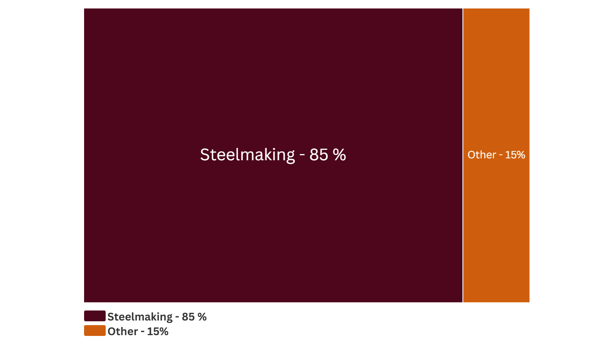

Manganese is a very hard, brittle transition metal. Manganese occurs as a trace element in several ore types: oxides, carbonates, hydroxides, and silicates. More concentrated manganese ores are hosted in ancient seabeds under intense pressure. 70% of manganese deposits have been identified to occur in South Africa. The most common occurrences of manganese-containing minerals include rhodochrosite, pyrolusite, and braunite. [1]
Where was manganese discovered?
The manganese oxide, pyrolusite has been used to make black pigments since the prehistoric period. The metallic form of manganese was first identified in Austria by Ignatius Kaim 1771. Three years later in Sweden, Johan Gottlieb Gahn heated the pyrolusite (a manganese dioxide) in the presence of carbon to yield manganese metal. Gahn demonstrated manganese metal could be obtained through carbothermal reduction. [2][3]
Screenshot via Google Earth
What is manganese used for?
What industries use manganese?
Data from USGS National Minerals Information Center 2025
How much manganese has been mined?
Cumulative Manganese Mined by Country in Metric Tons
Data From British Geological Survey (1913-2019)

Where is manganese mined
Between the 1930-40s, the USSR was the largest exporter of manganese and had a reserve of 816,000 thousand metric tons ~ 815,000,000 MT [6].
The USSR claimed such a high reserve of manganese because of control over the Nikopol manganese deposit which spans Bulgaria, Georgia and Ukraine.
One of the largest manganese mines in the USSR was the Nikopol Manganese Basin in Dnipropetrovsk, Ukraine which began mining in 1886.
Today the area produces ferromanganese (FeMn) and ferrosilicomanganese (FeSiMn).
The Encyclopedia of Ukraine reports that this basin hosts 2.3 billion tonnes of manganese, spanning Bulgaria, southern Ukraine and Georgia [7].
Further reporting on the region appears in recent news coverage [8] and industrial documents [9],[10],[11].
The US imports 63% of its manganese from Gabon (USGS) [12]. Gabon gained independence in 1960.
The French began mining Gabon in 1880s. The company that oversees the largest mining industry in Gabon is called Eramet.
It was founded after the 1880s in Gabon by the French. Gabon gained independence in 1960.
Eramet's largest processing facility for manganese concentrate, the intermediary product synthesized from ore mined in Gabon, is in Ohio, USA.
Presently, 22% of Gabon's land is used for mining minerals [13],[14],[15].
In recent years, South Africa has lead manganese production.
Its global reserves are estimated at 560,000,000 MT [1].
One of the largest South African manganese mines is the Mamatwan Mine, with annual production of 3 million MT [16][17].